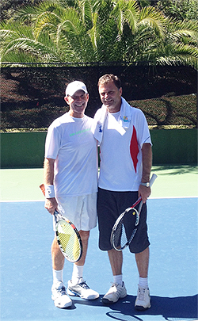

Previous: The Tennis Grunt | 🏠 Classic Lessons Home | Next: The Two Handed Backhand
The Traditional Forehand: A Living Model
Comprehensive unified tennis knowledge base — Fundamentals, Stroke Analysis, Reference Library, and more
The Traditional Forehand:A Living Model
Scott Murphy
The forehand exemplifies the extreme elements in modern tennis.
When we study the modern pro game, we see players using an incredible range of advanced elements--extreme grips, windshield wiper finishes, radical torso rotation, heavy spin, fully open stances, and contact a foot in the air or higher. And that's just the forehand.
Many club players are convinced that these are the models they should follow—or simply find satisfaction in copying their heroes regardless of the impact on their actual play.
The fact is that some players can be successful incorporating many of these elements. I have incorporated many of them into my game, and teach them as well.
But, based on my experience over the last two years, I believe that a simpler more classical approach can also be devastatingly effective. This approach is often as applicable or even more applicable to the games of many players as compared to the more radical elements in "modern" tennis.
Training and playing with my great friend Karsten Popp has driven this point home in spades. He has a very simple, classical technical game that produces amazing results.
What I want to do in these articles is describe his strokes and their technical components, starting this month with the forehand. In upcoming articles we'll take a look at the rest of his game.
Obviously everyone has the freedom to play as they wish. But the insights in this series—as unfashionable as some might find them--may give you inspiration and possibly a different path to tennis success.
A traditional forehand that can dominate at the club level?
Who is Karsten Popp?
So who is Karsten Popp and why would I point to his game as a model for "traditional" tennis? I met Karsten three years ago through a fellow teaching pro and we clicked instantly as friends and practice partners.
Karsten is a former high level player who was born Germany but moved at a young age with his family to South Africa. He started playing tennis at 8 years old and went crazy for the game.
When the family moved to a house with a tennis court in their backyard he would hit for countless hours on the backboard. His parents would have to drag him off the court after dark.
Karsten played on a regional tennis squad with two-time Australian Open champion and world top ten Johan Kreik, and the two became close friends and constant practice partners.
He then played college tennis for South African University in Johannesburg and graduated with a degree in electric engineering. Deciding to pursue a professional tennis career, he moved to the Harry Hopman Tennis Academy in Florida. He first played American tournaments, and then got his first ATP points at a satellite tournament in Portugal.
It looked like he was on his way, but disaster struck when he contracted hepatitis. Although Karsten recovered fully with time, his tennis career was permanently derailed.
He went on to a long and successful career in management in the high tech industry, which eventually landed him part time in Marin County, California where we met.
The Time Warp
But for most of his business career Karsten stopped playing tennis altogether. Then 10 years ago he found his way back.
More on Karsten's "time warp" game in upcoming articles.
Although he didn't realize it at the time, he was stepping back on to the court from inside a time warp. Karsten had never "modernized" his game.
He had a world class eastern forehand, a vicious slice backhand, and a killer net attack. And after hitting with him for the last 2 years the question I have is this: why would he?
Here is a guy that could obliterate the overwhelming majority of high level "modern" club players. If the modern game is inherently superior at all levels, how could Karsten play so well, I had to ask myself?
Maybe in our rush to become modern, I had to conclude, we are overlooking the genuine merits of a simpler style, a style that could still be effective at the highest levels of club tennis. That was the basic insight that led to this article.
Here was living proof of an alternative to current conventional wisdom that reopened some fundamental issues in my thinking. Here's the story of how that happened.
Paradise
Karsten comes regularly to what he has dubbed my "Paradise Court," a private teaching court I am lucky enough to have in a wooded residential area in the hills of Ross, California, home to some of the most beautiful real estate on the planet.

Karsten Popp and myself at the "Paradise Court."
From the start, our exchanges were some of the most enjoyable I have ever experienced. Frequently they would go on for so long that one or the other of us would just catch the ball and say, "Enough!"
I love to go for that type of infinity rally with all the guys I practice with. But the difference with Karsten is that no matter what kind of ball you hit him his reply is invariably incredibly solid and accurate.
Hit him a low ball, a wide ball, a big kicking topspin, a shank, an inadvertent short ball. It doesn't matter.
They all come back like they were shot from a ball machine.
Staunchly Modern?
I realized that I had found the ideal practice partner, but as we played more and more, I began to study Karsten's game more closely.
For many years, I've been a staunch advocate of the modern game. I love the variety, the freedom, the athleticism, and the challenge it presents.
But like Karsten I had been brought up on the traditional game. From as early as I can remember, through my early twenties, I used a composite grip for everything, a mild continental not unlike the grip still used by John McEnroe.
I sliced every backhand. I had no clue how to hit heavy topspin. I had a good service motion and my serve was a weapon, but I hit only flat and slice, no kicks. I had a good forehand, I was fast, I volleyed well, and all this made me a successful junior competitor.
Like Karsten I eventually went away from the game for a period of years, pursuing a career as a professional musician, drumming for various bands all over the country and the world.
Unlike Karsten, when I came back to the game I went fully "modern."
The difference was that when I came back to tennis, I decided to pursue a full time career as a teaching professional—the best decision of my life other than marrying my wife Cynthia.
I quickly realized that the game was changing and while the serve and volley game was still alive at that time with players like McEnroe, Boris Becker, and Stefan Edberg, the movement was clearly toward topspin, with big grip changes, open stances, and kick serves. So I launched myself into one of the most exciting projects I could imagine, immersing myself in the "new game."
I shifted to a semi-western forehand and an eastern backhand grip. For hours I would self-feed and work on hitting copious spin.
On vacation on Maui, I found a beautiful public court by the ocean on the island of Maui. I spent literally days doing a simple drill with 3 balls, hitting to one side then the other.
I added a massive kick serve to my repertoire. But I also kept the volleys and the slice backhand I had worked so hard to develop as a junior.
By the time I met John Yandell and we started to practice regularly, I was a modern player with a complete game, and surprised John with how natural it had all become when we talked about the transformation.
Part of my transformation was adding a heavy kick serve.
In the 1980's and early 90's competed successfully in Northern California tournaments, in the Open, 5.0 and senior divisions and I still play USTA League tennis for the legendary Harbour Point Club in Mill Valley.
But many years after modernizing my game, I use many of the shots I learned when I started. I think having that foundation was an advantage in becoming a more complete player.
And with the modern game in complete ascendancy I also teach those same "traditional shots" to players to whom they are often totally foreign: slice groundstrokes and returns, classical volleys and half volleys. Meanwhile I have continued to evolve the modern dimension in my own game as well, for example adding swinging volleys. (Click Here.)
Back to the Future
Which brings us back to Karsten. Despite everything I have just said, the fundamental insight I came to from hitting with Karsten is how effective traditional fundamentals can still be at a high level.
Of course it helps to be an exceptional athlete with great speed and very good dynamic balance, as is the case with Karsten. And of course his years of training and playing matches at a high level solidified his game.
But this is one of the ways in which the game remains endlessly fascinating: the many ways in which it is possible to play amazing tennis. So let's do an overview of Karsten's classic game and then you can see what you may find intriguing for yourself.
An eastern grip, a unit turn and a moderate, compact backswing.
Forehand
Karsten uses an eastern forehand grip and his forehands aren't hit with extreme topspin or—seemingly--much margin for error. But this is one of the points that is often missed about flatter classical strokes.
Players such as Jimmy Connors were incredibly consistent because their technical motions were so precise. The same is true with Karsten. My belief is that for many players, their simplicity can be a solution for chronic, erratic modern play.
He has a full unit turn which he creates by keeping his non dominant hand on the throat of the racquet. This fundamental seems to transcend styles and is an element in all good forehands classical and modern.
His backswing is a moderate loop. The latest research by Brian Gordon (Click Here) shows how the backswing on best current tour forehands, particularly Federer, stay on the players hitting side and this is true for Karsten as well.
Karsten hits mainly square stances. Interestingly, with his square stance forehand he also uses the outside foot to position behind the ball—a footwork pattern that is typically associated only with the modern game.
A square stance and long Sampras like finishes, with the racket on edge.
However, he will open the stance somewhat when the ball is high. And again, here is a misconception about the modern game—that there is an either or choice regarding stance. Karsten shows you can have the natural flexibility to open the stance to varying degrees with an eastern grip, even if your preference is to step in.
But there are other aspects that set Karsten's swing firmly in the classical camp. The first is his finishes. His forward swing extends outward towards the target, and he uses relatively little additional arm or wrist motion.
The majority of his followthroughs are with the racquet finishing in front of the opposite shoulder. Sometimes he actually catches the finish. All in all it looks like the young Pete Sampras as filmed by Robert Lansdorp. (Click Here.)
Notice also how the racket is basically staying on edge to court. There is little to no windshield wiper action in his basic drive.
The second strongly classical characteristic in Karsten's forehand is his contact point. This is in turn related to his preference to step in. He takes the ball early and keeps the contact in front of his front foot.
Early contact at a natural eastern height.
This keeps the height in a comfortable relatively low strike zone that is ideal for his grip. It is also the basis for his natural court positioning close to the baseline.
The positioning and timing of his forehand has a huge impact on the effectiveness of his ball. By taking the ball on the rise so close to the baseline, he takes significant time away from opponents.
First the ball is traveling a shorter distance to the opponent. It is also hit on a flatter arc. This combination means his ball gets to you significantly faster than a looping ball hit from the deep backcourt.
This allows Karsten to simply hit through his opponents on many balls. But at a minimum he rushes you and your reply. This can make it very difficult to find your rhythm if you are used to opponents who play far behind the baseline.
Karsten explained to me that one of the keys to his timing is that he envisions every forehand as if it's an approach shot. This makes sense because in his playing career he played serve and volley, and also looked for every opportunity to get to the net from the backcourt and on returns.
The incredible effectiveness of early timing in the backcourt game is often overlooked at both the pro and the club level. This is strange, since the greatest player of all time in my view, Roger Federer, plays this way, always trying to force play by standing and hitting on the rise. This of course was a basic strategy for some of the other all time greats including Andre Agassi.
Karsten adapts his stance by opening on higher balls.
But as I mentioned, Karsten is also quite flexible with his stance when necessary. When I hit him high bouncing, heavy topspin, he will often open the stance somewhat, playing the ball at a noticeably higher contact point, and playing a slightly more looping and less penetrating ball, waiting for his chance to step in and really punish you.
So there you have it.
Minimalist preparation that is sound by any standard combined with an equally simple forward swing. An attacking court position and early timing.
Factors that allow Karsten to position upward toward the baseline and to create a consistent, penetrating, relatively flat ball, and a contact point that is very difficult for even high level opponents to hit through. But with the flexibility to defend the high bouncer if necessary.
And yes, you need a certain naturally aggressive inclination to play in this exact style, plus the ability to hit your forehand on the rise. My hope however is that what I have presented here may resonate with some players who have felt compelled to hit the "modern" forehand for no other reason than that it was modern.
In that way Karsten's traditional approach could be a real inspiration, and yes, a great technical model. Stay tuned next for his "traditional" one-handed backhand!

Scott Murphy is from Marin County, California where he started playing tennis at age 5 in a family of tennis nuts. Both of his parents were major influences in his development. He also took lessons from Marin legend Hal Wagner and former top 10, Harry Roach. Scott is a graduate of the University of California at Berkeley where he played baseball and football but continued to work on his tennis game with renowned coach Chet Murphy.
He was the head pro at San Domenico/Sleepy Hollow Tennis Club for over 20 years. He also directed the Nike Tahoe Tennis Camp at the Granlibakken Resort for 10 years. Scott now teaches privately in Ross, Marin County and in the summer he directs the Tuscan Tennis Academy which he founded in Quarrata, Italy.
Check out Scott's website at scottmurphytennis.net
You can contact Scott directly at: scottmrph@yahoo.com
Source: tennisplayer.net archive — The Traditional Forehand - A Living Model.docx (John Yandell teaching library, 2002-2022). Extracted and rendered as HTML for Tennis Future Lab.